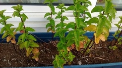
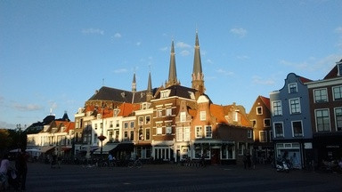

نعناهایی که مریم کاشته. توی گلدانهای باریک آویزان به پنجره آشپزخانه. برگهایش زمخت است و خوشبو. چند برگش را توی دست له کنید و بریزید توی یک لیوان آب خنک. نوشیدنش روح آدم را تازه میکند.
روایت داریم که غر زدن درباره هوای اغلب گرفته دلفت باعث نزدیکی دلها میشود. اما منصف اگر باشیم میتوانیم ساعتها به این آسمان آبی و این ابرهای شکیل آسمان دلفت نگاه کنیم و برای دقایقی غرزدن یادمان برود. حیف که مثل هر چیز خوب دیگری عمرش کوتاه است.

عکس را دوست دارم. میدان مرکزی دلفت پشت به هلندیساز از برجهای کلیساهای فت و فراوان دلفت. همان وسط عکس یک فستفود آشغالفروش دیگر هست به اسم سابوی. ساندویچهایی که خودشان میگویند خیلی دراز است چون از سیستم اینچ و فوت برای اندازهاش استفاده میکنند. همینجا اعلام کنم که ساندویچ زیر نیم متر دراز نیست. معمولی است. یک لایه ژامبون و یک ورق کاهو هم تا حالا کسی را سیر نکرده.